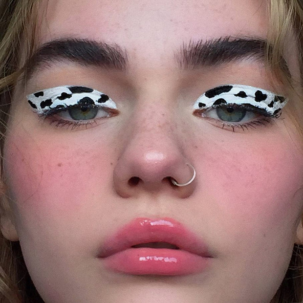
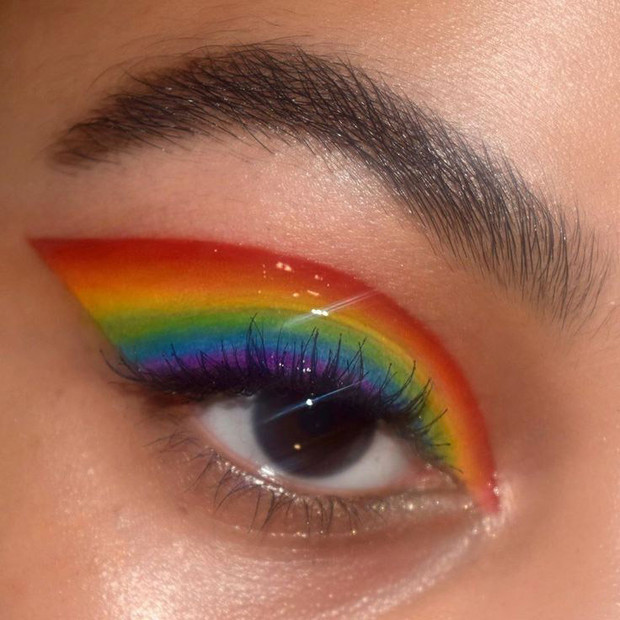
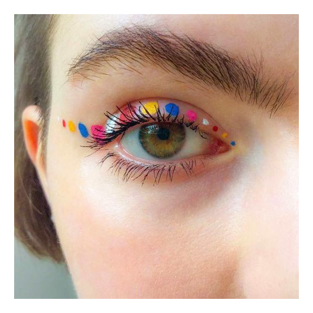
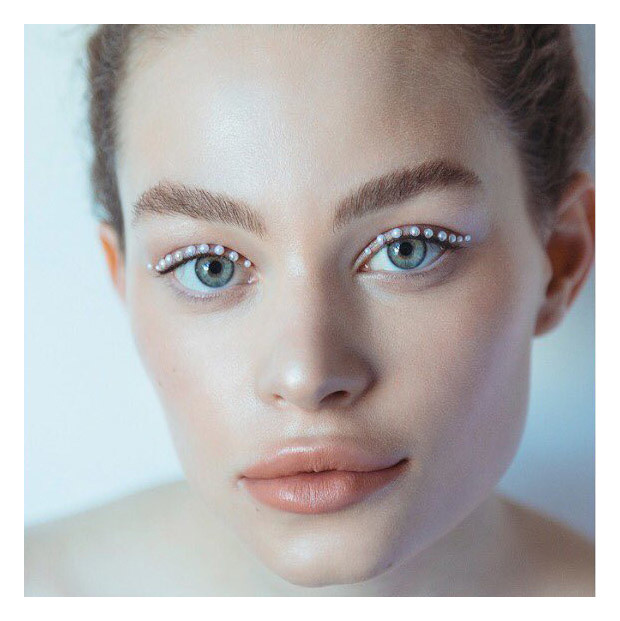
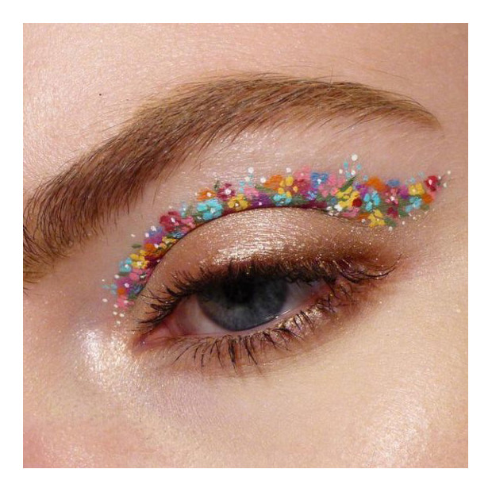
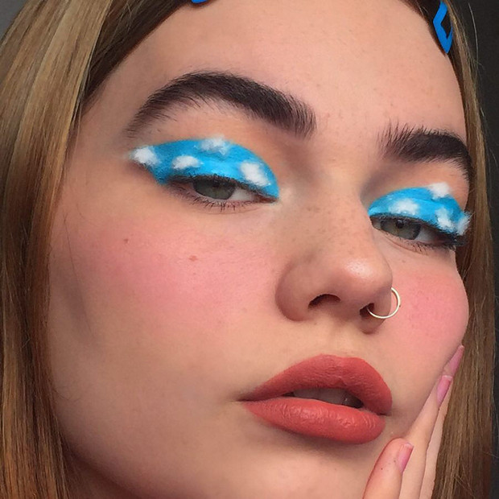
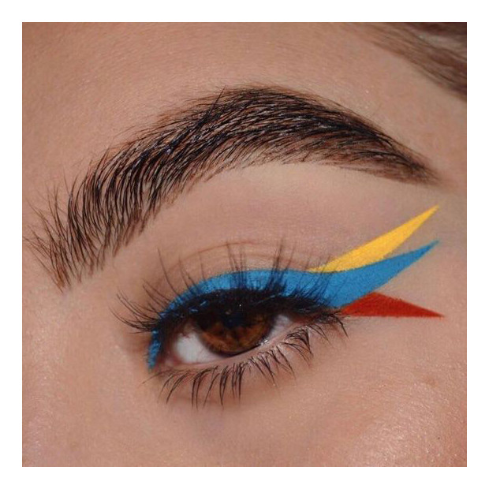

1. COW PRINT; Si fuiste fan de la tendencia de estampado de vaca en las uñas, seguramente este delineado será uno de tus favoritos por un buen rato. Se trata de hacer un cat eye muy grueso que cubra todo el párpado móvil y trazar manchas como las de una vaca sobre la superficie.
2. DELINEADO ARCOIRIS; Ok, esta idea ya es subir el nivel de expertise por completo, ¡pero te aseguramos que el resultado vale la pena! La clave de todo está en colocar una cinta adhesiva de la esquina exterior del ojo, hasta unos milímetros después del final de la ceja, y trazar líneas finas de colores a lo largo de todo el párpado, como si fuera un arcoiris. Tómate tu tiempo y si lo necesitas, limpia cada trazo con desmaquillante y un hisopo.
3. DELINEADO DE PUNTOS; Después de pasar la prueba anterior, cualquier delineado se te hará más sencillo. Por ejemplo, un dot-liner que siga la forma de un cat eye con puntos de diferentes tamaños y colores, ¿qué te parece? Para que te sea aún más fácil, utiliza un puntero de uñas (para hacer un círculo perfecto) y delineadores líquidos de secado rápido.
4. DELINEADO CON PERLAS Los delineados con aplicaciones son lo máximo, ya que solo necesitas conseguir stickers miniatura y adherirlos en la forma de tu delineado favorito. Los hay de perlas, de estrellas, de piedras diminutas y hasta láminas metálicas completas. ¡Apuesta por ellos y lleva TODA la atención a la mirada!
5. DELINEADO DE FLORES Definitivamente esta es una de las ideas que sí o sí debes hacer cuando estás aburrida, ya que es muuuy detallada e híper-cool para las fotos. ¿Cómo empezar? Pinta diminutos puntos blancos que sigan el camino de un delineado y deja espacio entre ellos -éstos serán el centro de tu flor-. Después, pinta óvalos alrededor de cada círculo para simular los pétalos y sigue así hasta terminar la línea. Si quieres hacer un delineado más grueso, repite el proceso con una tira de flores encima.
6. DELINEADO DE NUBES No es más que un cat eye azul cielo (muy grueso) al que se le deben adherir pequeños trozos de algodón para representar las nubes. ¿Te gusta o es too much? Si lo recreas, ¡la foto en Instagram es obligada!
7. DELINEADO DE AVE
Es una variante del delineado clásico, pero que da como resultado la silueta de un ave de colores. Para lograrlo, es infalible iniciar con un cat eye tradicional, azul y alargado, y dibujar dos “colitas” con punta triangular: una amarilla que pase por encima del trazo de gato y otra roja que apunte hacia abajo. Entre más limpio sea el borde, ¡mucho mejor!
